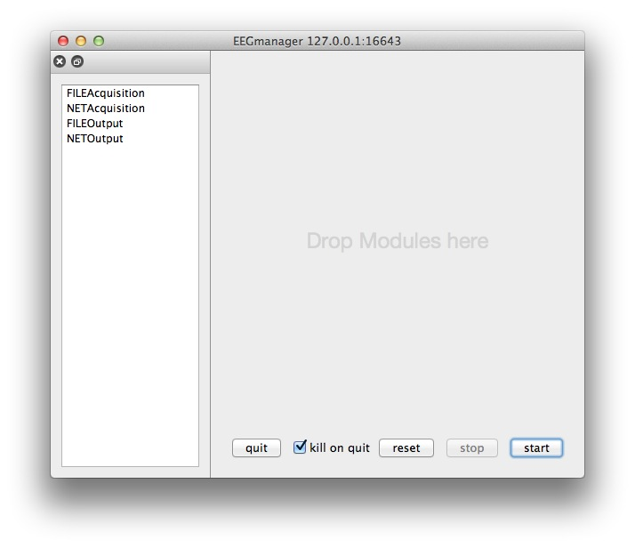
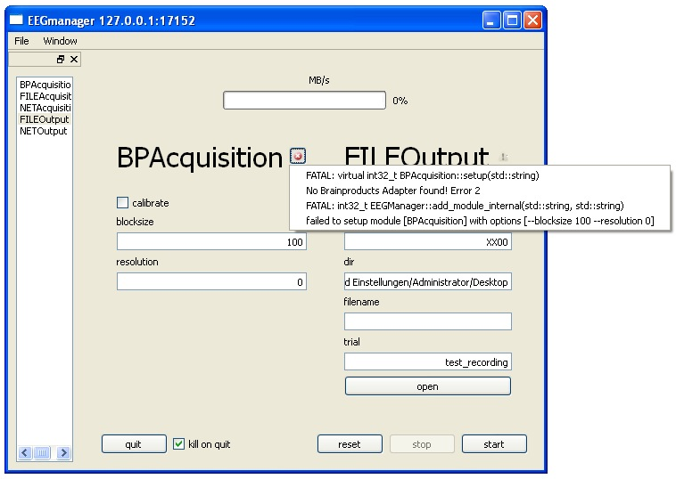
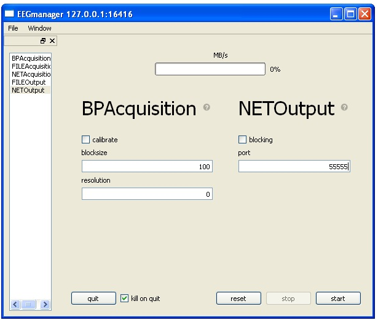

This Tutorial describes, how to build and setup the eegmanager. The eegmanager can be used to work with eeg-data originating from a live recording session (online).
The EEGServer itself depends on several other software frameworks and/or packages. Before we start, download and install the following software on your system:
Windows
0. You need a compiler for c-code. So please download and install the MinGW / MSYS tools. You can find them here: http://sourceforge.net/projects/mingw/files/latest/download?source=files
- make sure, C++ compiler is checked in installation options
- ignore the error saying “no valid w32api.h in MinGW”
- add MinGW binary DIR to systems PATH variable (e.g. C:\MinGW\bin)
1. Qt4 and qmake. They are needed for the GUI and compilation. You can find an installer for windows here: http://releases.qt-project.org/qt4/source/qt-win-opensource-4.8.4-mingw.exe
- reference your MinGW location during installation (e.g. C:\MinGW\)
- add Qt binary DIR to systems PATH variable (e.g. C:\Qt\4.8.4\bin)
2. Python. Python is needed for running the GUI. You can find a Python MSI here: http://www.python.org/ftp/python/2.7.3/python-2.7.3.msi
- add Python binary DIR to systems PATH (e.g. C:\Python27)
3. The yaml package is needed for the GUI as well: http://pyyaml.org/download/pyyaml/PyYAML-3.10.win32-py2.7.exe That python is able to use the Qt-GUI elements also the pyQT bindings have to be installed. You can find an installer here: http://sourceforge.net/projects/pyqt/files/PyQt4/PyQt-4.10/PyQt4-4.10-gpl-Py2.7-Qt4.8.4-x32.exe
4. If you want to record live data you have to have an BrainProducts EEG-System consisting of the USB-Adapter, an Amplifier and a Cap-System. Also the driver for the USB-Adapter has to be installed on the host computer. This is usually done by installing the BrainVision Recorder software by BrainProducts.
Mac, Linux
0. You need a compiler for c-code. Get it via a package manager of your choice. On Macs you can also install the developer tools (aka XCode) to obtain a C(lang)-Compiler. If you already have a compiler installed you are good to go and can proceed to the next step.
1. Qt4 Tools and Libraries (for qmake and the GUI components). A Tutorial for downloading can be found <here>. Also, you can find the Qt4 libraries in the package manager on your system. For example on a mac (with port installed) type.
sudo port install qt4-mac2. If you not already done it, install python, py-yaml and the pyQt4 bindings. Make sure, all the packet use the same python version (e.g. 2.6), the python-version is in your path and is the default version.
3. Make sure that all executables are accessible by your current environment by modifying the path variable.
Navigate to the eegmanagers source directory.
cd ${pyspace}/pySPACE/tools/live/eegmanagerInvoke the qmake command there.
qmakeThe software project uses the SUBDIRS template because also some dependencies (in deps) have to be built before the eegmanager. After qmake finished run make.
makeAfter the compilation finished the executable is located in
${pyspace}/pySPACE/tools/live/eegmanager/eegmanager and is alsocalled eegmanager or eegmanager.exe respective.
The control of the eegmanager is achieved by sending remote-procedure-calls to the running executable. Dont worry, you dont have to do it yourself on the terminal. Instead there is a GUI application, which lets you interact with the eegmanager easily and shows you the current status of the running application.
To start the GUI navigate to the gui subfolder and launch it with python.
cd ${pyspace}/pySPACE/tools/live/eegmanager/gui python eegmanager_gui.pyYou will see something like this:
The unconfigured GUI on a Mac.
The left pane lists available modules to use with the eegmanager. They are ordered from modules, which are the source of data (e.g. NETAcquisition) on the top and modules, which comsumes data (e.g. NETOutput) at the bottom.
Once you set up the GUI to your needs you can save the current setup by pressing command+s or via the menu to a .egm file. This file can later be opened to quickly return to where you left. Under the hood these files are binary python-pickle dumps which contain data in the yaml format.
For debugging purposes another view can be enabled by clicking on Window->Console. The Console-windows displays the stdout from the underlying process. Normally there will be only some informational messages but when some abnormal behaviour is observed please feel free to have look in there. For performance reasons the output is only refreshed when the refresh button at the bottom is clicked.
One simple application of the eegmanager is the recording of data. Currently only the BrainProducts Amplifiers are supported via the access to the Windows driver and the USB-Adapter or PCI-Card.
After you compiled the eegmanager successfully on a windows machine after launching the GUI you will see something like this:

The unconfigured GUI on Windows XP
For online access to the data drag the list item which says BPAcquisition onto the left of the window.
For recording the data to a file add the FILEOutput item. The configured GUI should then look like this:

The configured GUI for recording on Windows XP
Pressing the start buttont starts the execution of the eegmanager and records the data. Dont forget to fill in the parameters such as the desired resolution, the directory where the data gets saved and the filename.
If something goes wrong (e.g. the USB-Adapter can not be found) you will get notified by a small red cross next the module in error. By clicking on it a pop-up will print some of the output related to the error.
Example for an error while configuring the eegmanager
Streaming data in principle works like recording. The only difference is, that the module, which consumes the data gets replaced by the NETOutput modlue. This module forwards the data via a network connection. The network data stream can then be used to process the data with pySPACE-live.
Simple streaming setup
For connecting both applications note the current IP-Address of the computer which runs the streaming. Configure the port number in the GUI to fit your needs. Add this information (IP-Address, Port) to you pySPACE-live parameter file and the data should get received.
We built the eegmanager and have learned how to acquire data. The data can be recorded directly but can also be forwarded to another computer on the network to get processed or recorded there.